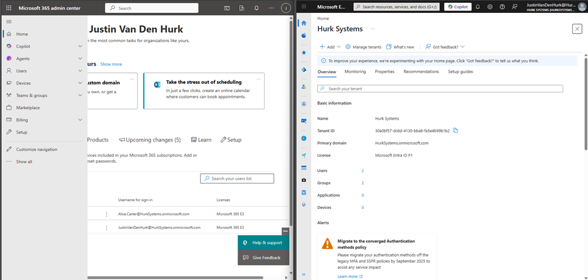
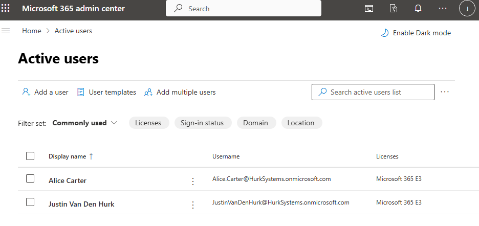
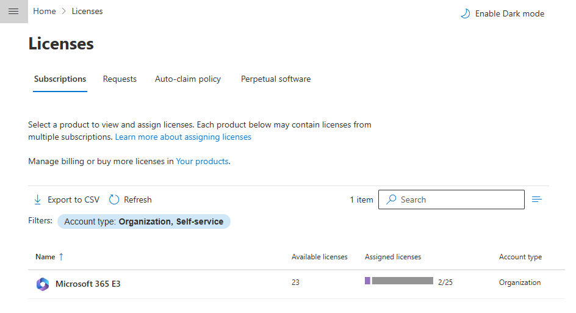
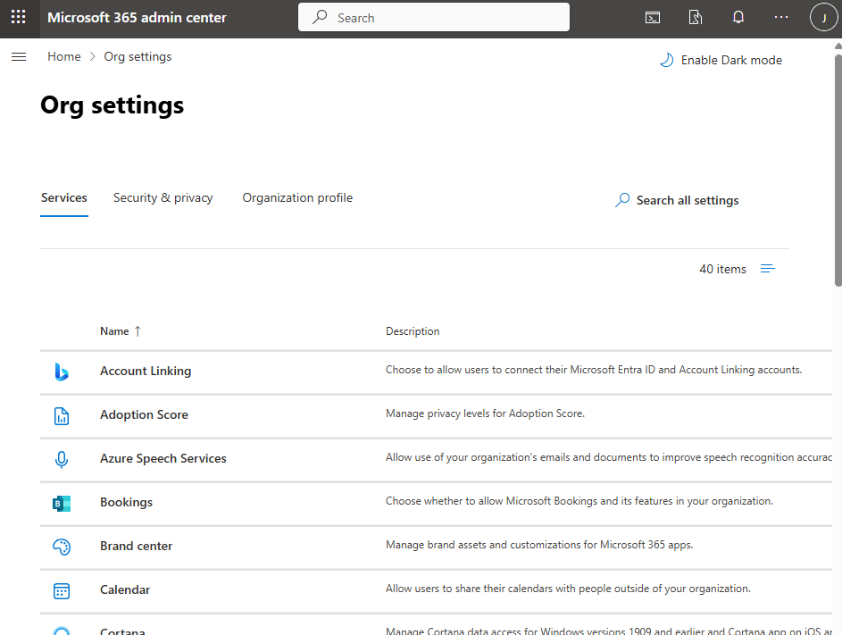
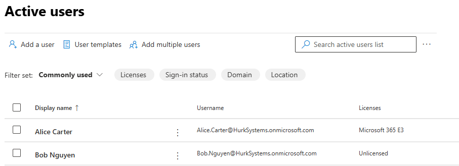
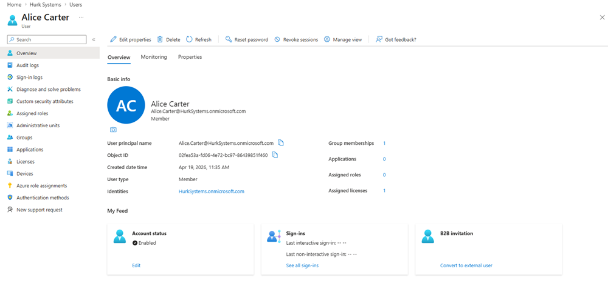
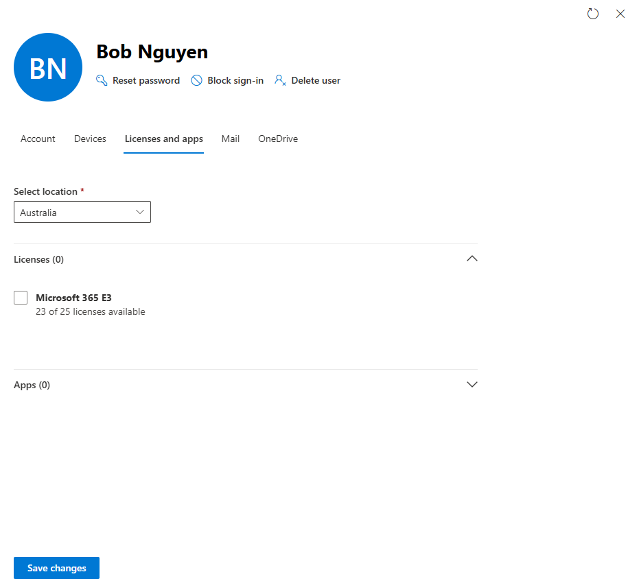

MS-102 Lab 1 - Tenant Setup and Identity Basics
Published: April 19, 2026
Overview
This lab demonstrates how to create and manage users in Microsoft 365, and highlights the difference between Microsoft 365 Admin Center and Entra ID.
- Created and managed users
- Assigned licenses
- Verified identity in Entra ID
- Tested access with and without licenses
Objective
Build a small Microsoft 365 tenant where:
- Users can be created and managed
- Identity is visible in both Admin Center and Entra ID
- Users can sign in successfully
Requirements
- Microsoft 365 tenant (free dev tenant)
- Admin access account
Users to Create
| User | |
|---|---|
| Alice Carter | Alice.Carter@yourtenant.onmicrosoft.com |
| Bob Nguyen | Bob.Nguyen@yourtenant.onmicrosoft.com |
Tasks
Task 1 – Access Admin Portals
Opened Microsoft 365 Admin Center and Entra ID side by side.

Task 2 – Explore Tenant Structure
Where are users managed?
Users are managed under Users > Active users.

Where are licenses controlled?
Licenses are controlled under Billing > Licenses.

What is the purpose of Org settings?
The Org settings are to configure organization settings like apps, services, and features.

What is the difference between Microsoft 365 Admin Center and Entra ID?
Microsoft 365 Admin Center focuses on what apps and services a user gets, while Entra ID focuses on identity and access.
Task 3 – Create Users
Created Alice Carter and Bob Nguyen and assigned licenses.

What license is assigned?
Microsoft 365 E3
What happens without a license?
User can sign in but cannot access Microsoft 365 services.
Task 4 – Verify in Entra ID
Verified users exist in Entra ID.

What extra information is shown?
Object ID, roles, authentication methods, and sign-in info.
What is an Object ID?
Unique identifier assigned to each user.
Can it be changed?
No, it is permanent.
Task 5 – Login Test
Users successfully logged in.
What determines access?
Licenses, roles, and group membership.
Task 6 – License Test
Removed license from Bob.

What changed?
User can log in but cannot access services.
Which services are unavailable?
Outlook, Teams, SharePoint, OneDrive.
Knowledge Test
What is Microsoft 365 Admin Center used for?
Manage users, licenses, and services.
What is Entra ID responsible for?
Identity and access management.
Why do users exist in both systems?
Identity is managed in Entra ID, services in Admin Center.
What happens without a license?
No access to Microsoft 365 services.
Identity vs Service management?
Identity = user/authentication, Service = apps and access.